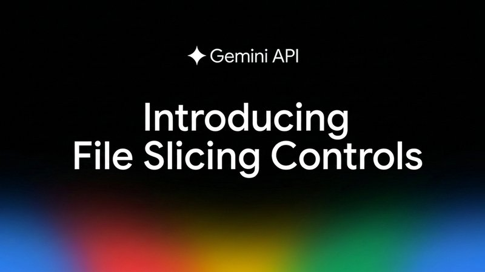
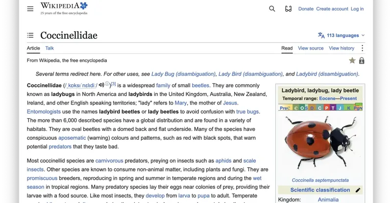

豆包「工作」上线 21 个专业工作台，可直接处理办公任务
量子位报道，豆包「工作」新增 21 个专业工作台，覆盖常见办公与业务场景，使用户可以更直接地用人工智能完成具体工作
量子位 · 11-23 10:29
看原文
量子位报道，豆包「工作」新增 21 个专业工作台，覆盖常见办公与业务场景，使用户可以更直接地用人工智能完成具体工作
Claude AI can review pull requests and ship fixes on its own now
The Verge 报道，Anthropic 的 Claude 已能自动审查代码拉取请求（pull request）并自行提交修复，进一步减少开发流程中的人工确认环节

国际实用Introducing file slicing controls in the Gemini API
谷歌宣布，Gemini API 新增文件切片控制，开发者可直接上传 PDF、办公文档、音频和视频，并只请求所需页面、单元格或片段，以降低 token 消耗、提高处理精度
量子位报道，蚂蚁集中发布多项医疗健康人工智能成果，覆盖开源模型、本地部署以及面向问诊场景的能力，意在降低医疗机构使用专业医疗模型的门槛
量子位报道，RoboChallenge Zero 公布首期评测结果，测试大模型接入真实机器人后的任务完成表现，为具身智能提供可比较的基准
量子位报道，一个由 936 个智能体组成的系统在约 12 周内发布近千篇论文，并尝试完成同行评议流程，展示了人工智能自动科研的规模化试验
OpenAI and Cisco introduce Shirudo
OpenAI 与思科（Cisco）推出开源 Linux 运行时 Shirudo，使智能体能够编写动态 eBPF 控制策略，在不停机的情况下为系统提供防护，给运维人员更多时间测试并部署补丁
US to blacklist Asian AI firm Megaspeed after Nvidia scandal
BBC 报道，美国计划将亚洲人工智能公司 Megaspeed 列入黑名单，这一举措与近期英伟达相关风波有关，可能限制其与美国企业的往来
NVIDIA Board Reinstates Jensen Huang as President, CEO and Board Director
英伟达董事会宣布，恢复黄仁勋（Jensen Huang）的总裁、首席执行官及董事职务。此事随即引发市场大幅波动，并与持续中的相关调查并存

国际实用Ladybird, the first new browser engine in years, is now available to test
The Verge 报道，独立浏览器引擎 Ladybird 已开放测试。它不基于 Chromium 或 Firefox 的现有内核，是近年来出现的首个全新浏览器引擎
IT之家报道，华为星芒 OSTA O1 Pro 新机确认支持 eSIM，最多可管理四个号码，并允许同时启用双卡
联想推出面向助行场景的穿戴式外骨骼设备「来酷行者 ONE」，售价 6999 元
华为与澳门电讯联合发布 Wi-Fi 感知服务，支持动态感知并识别家庭成员活动状态，把无线网络从连接工具扩展到家庭场景感知
荣耀 CEO 李健官宣，荣耀阔折叠手机计划于 2027 年 3 月亮相，并表示产品在折痕控制上有新进展
States sue SpaceX to stop Grok from generating child sex images, revenge porn
Ars Technica 报道，美国多个州起诉 SpaceX，要求其停止旗下 Grok 生成儿童性剥削内容和报复色情。这是围绕生成式人工智能滥用的最新诉讼
财新报道，美国总统特朗普拟限制美国企业在海外建设数据中心，并威胁对相关安排征收高额关税，可能影响人工智能基础设施的全球布局
中新网报道，在交易所下调融资保证金比例等稳市措施落地后，A 股出现 V 型反弹，显示政策组合开始作用于市场情绪和交易活跃度
Nvidia value climbs by almost $1tn and tech stocks rally after Jensen Huang returns
BBC 报道，黄仁勋恢复英伟达职务后，该公司市值增加近 1 万亿美元，科技股跟随反弹，此前受压的人工智能相关交易重新活跃
全球首只离岸人民币债券交易型开放式基金（ETF）在香港上市，为国际投资者配置人民币债券提供新的工具
财新报道，18 只主动交易型开放式基金（ETF）首日上市，其中 3 只上涨，但全部出现折价，显示新产品仍在寻找定价平衡
国家能源局公布，2026 年 1 至 10 月全社会用电量同比增长 3.7%，其中 10 月同比增长 1.6%，为观察经济运行提供一项高频指标
US escalates sanctions on Iran, targets ‘shadow banking’ networks
半岛电视台报道，美国扩大对伊朗的制裁，重点打击用于规避限制的“影子银行”网络
Brazil’s Real Hits 19-Month Low as Post-Election Selloff Deepens
据彭博 RSS，巴西雷亚尔兑美元跌至约 19 个月低点，选举后的抛售仍在延续
Macron proposes French budget ‘golden rule’
据 FT RSS，法国总统马克龙提出预算“黄金法则”，意在为公共财政设定更明确的约束
浙江持续加强校园安全管理，已配备 6668 名公安法治副校长，把法治教育和安全防护进一步下沉到学校
广西用十年时间整治河湖乱占、乱采、乱堆、乱建等问题超过 1.7 万个，当地水生态环境质量总体保持稳定向好
宁夏发布“十五五”教育发展规划，提出到 2030 年普通高中录取率达到 86%，继续扩大高中阶段教育资源供给
随着松花江即将封冻，哈尔滨警方发布通告，禁止车辆和行人进入松花江及其他水域冰面通行或逗留，以防坠冰落水
COP31 ends in failure as countries split over fossil fuels, climate finance
Ars Technica 报道，在土耳其举行的《联合国气候变化框架公约》第 31 次缔约方大会（COP31）因各国在化石能源和气候资金问题上分歧过大而以失败告终
Russia threatens ‘hostile’ Estonia with ‘open war’
半岛电视台报道，俄罗斯指责爱沙尼亚采取“敌对”行动，并称对方正接近“公开战争”的边缘，地区紧张进一步上升
Iranian authorities flog singer who performed without hijab, lawyers say
BBC 报道，律师称伊朗当局对一名未戴头巾进行演出的歌手实施鞭刑，引发对言论和人身权利的关注
Nepal PM Balendra Shah visit: India to give $1.62bn economic package
BBC 报道，印度宣布向尼泊尔提供约 16.2 亿美元经济援助，旨在借尼泊尔总理访问之机重置双边关系
“生命的旋律——韩美林艺术展”在国家大剧院开幕，向公众展示这位艺术家的代表性作品
第四届 MUST 国际青年电影节在澳门开幕，为青年电影人提供展示和交流的平台
柏林中国文化中心举办第十一届“儿童戏剧周”，在德国两座城市上演相关剧目，面向当地观众介绍中国儿童戏剧
朝鲜族题材影片《金哲》上映，以延边山水为背景，讲述少年成长与温情故事
Apple renews Ted Lasso for season 5
The Verge 报道，苹果为剧集《足球教练》（Ted Lasso）续订第五季，该剧将继续在 Apple TV 播出
Steven Spielberg Will Direct a Western Written by Paul Thomas Anderson and Starring Cillian Murphy
IGN 报道，史蒂文·斯皮尔伯格（Steven Spielberg）将执导一部西部片，剧本由保罗·托马斯·安德森（Paul Thomas Anderson）撰写，基里安·墨菲（Cillian Murphy）主演
Molly Meldrum: Australian music legend dies aged 83
BBC 报道，澳大利亚著名音乐人、电视主持莫莉·梅尔德拉姆（Molly Meldrum）去世，享年 83 岁
Alinea 数据显示，《GTA 6》（《侠盗猎车手 6》）首发周末销量接近 4500 万份，周日活跃用户超过 4000 万，显示这款新作开局规模极大
2026 年 Steam 大奖提名已经开始，适逢十周年新增“名人堂”特别奖项，提名将于 11 月 30 日截止
Deltarune Chapter 6 is playable "from the beginning to the end," Undertale creator Toby Fox says
Eurogamer 报道，《传说之下》（Undertale）创作者托比·福克斯（Toby Fox）表示，《Deltarune》第 6 章已经可以完整通关
GTA 6 just got a patch that fixed a progression bug on PS5 and Xbox Series X/S, but it's not a performance update
Eurogamer 报道，《GTA 6》推出上市后首个补丁，修复了 PlayStation 5 和 Xbox Series X/S 上的进度问题，但并非性能更新